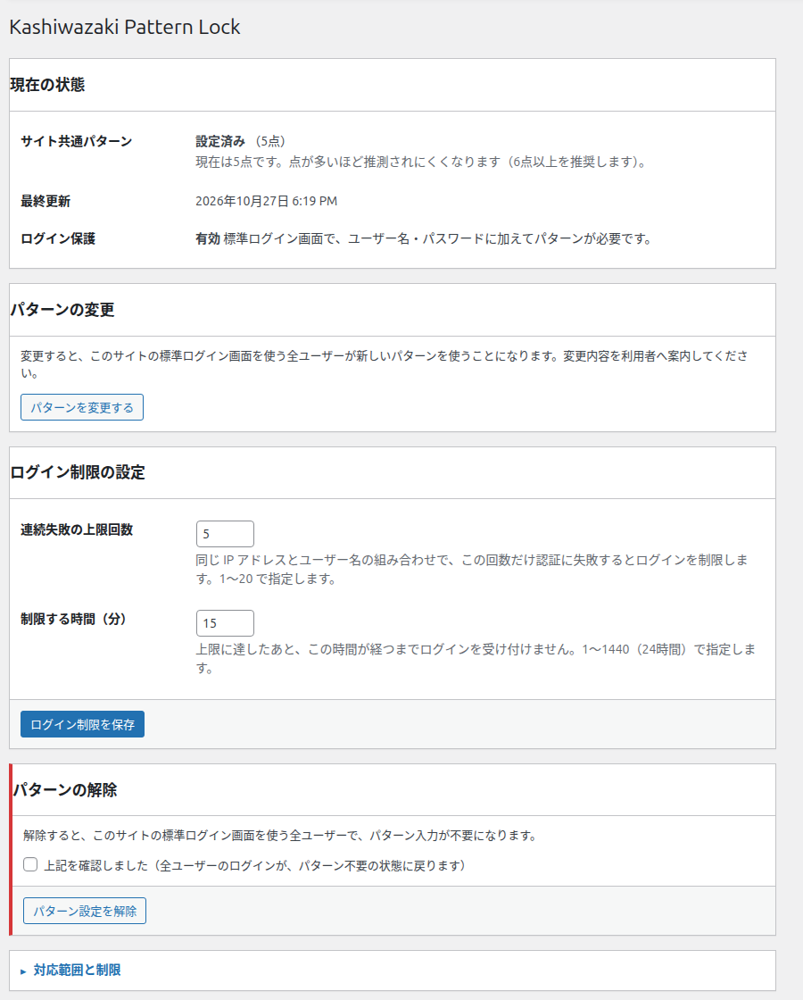
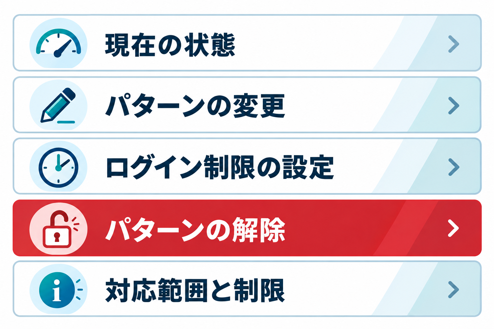
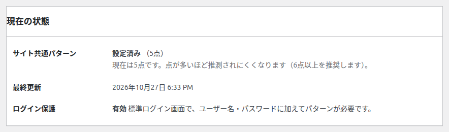
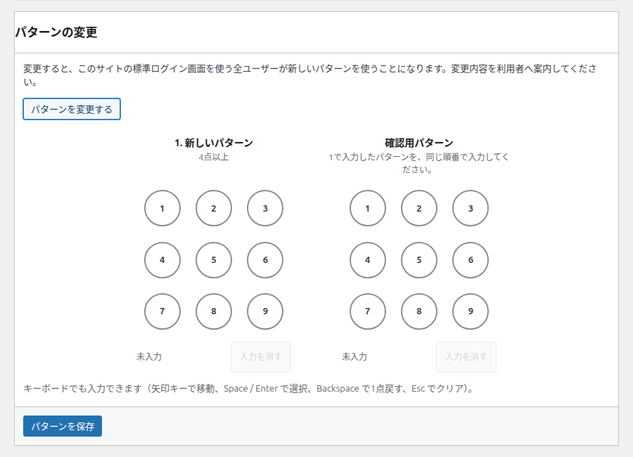
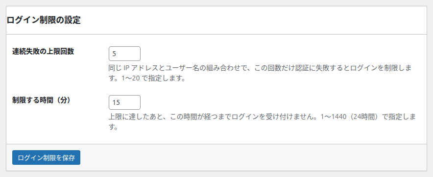
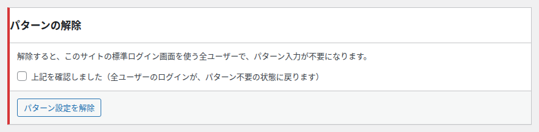
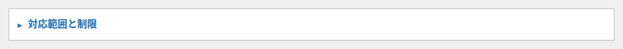

管理画面：設定済み
パターンが設定されているときの管理画面です。設定の確認、パターンの変更・解除、ログイン制限の設定ができます。


画面の地図
| パネル | できること | 使う場面 |
|---|---|---|
| 現在の状態 | パターンが設定されているか、いつ更新されたか、ログイン保護が有効かを確認します。 | 日々の確認 |
| パターンの変更 | 新しいパターンに変えます。 | パターンを変えたいとき |
| ログイン制限の設定 | 何回失敗したら、何分ログインを制限するかを決めます。 | セキュリティの調整 |
| パターンの解除 | パターンをやめて、標準のログインに戻します。 | プラグインを使わなくするとき |
| 対応範囲と制限 | このパターンが効く範囲と、効かない範囲を確認します。 | 仕様の確認 |
現在の状態

| 項目 | 表示の意味 |
|---|---|
| サイト共通パターン | 「設定済み（N点）」の形で、設定されていることと点の数を示します。4〜5点のときは「点が多いほど推測されにくくなります（6点以上を推奨します）」と注意が出ます。 |
| 最終更新 | パターンを最後に設定・変更した日時です。設定した利用者の名前が付くことがあります。 |
| ログイン保護 | 「有効」と、標準ログイン画面でパターンが必要であることが表示されます。 |
画面にはパターンの内容（どの点をどの順でなぞるか）は表示されません。確認できるのは「設定済み」と点の数だけです。
パターンの変更

変更すると、このサイトの標準ログイン画面を使う全ユーザーが新しいパターンを使うことになります。変更したら、利用者へ新しいパターンを案内してください。
手順
- 1
「パターンを変更する」を押して、入力欄を開きます。
- 2
「1. 新しいパターン」と「確認用パターン」に、同じパターンを2回入力します。
- 3
「パターンを保存」を押します。次回のログインから新しいパターンが必要になります。
| 項目 | 説明 |
|---|---|
| パターンを変更する | 入力欄の開閉ボタンです。エラーで画面が戻ったときは、自動で開いた状態になります。 |
| 1. 新しいパターン | 新しいパターンを4点以上で入力します。 |
| 確認用パターン | 1と同じ順番でもう一度入力します。 |
| パターンを保存 | 変更を保存します。保存するとすぐに新しいパターンが有効になります。 |
すでにログインしている利用者は、そのまま操作を続けられます。新しいパターンが必要になるのは、次にログインするときからです。
ログイン制限の設定

| 項目 | 意味 | 既定値 | 入力できる範囲 |
|---|---|---|---|
| 連続失敗の上限回数 | 同じ IP アドレスとユーザー名の組み合わせで、この回数だけ認証に失敗するとログインを制限します。 | 5 | 1〜20 |
| 制限する時間（分） | 上限に達したあと、この時間が経つまでログインを受け付けません。 | 15 | 1〜1440（24時間） |
ログイン制限を保存 を押すと設定が保存され、画面上部に「ログイン制限を保存しました。同じ IP アドレスとユーザー名の組み合わせで N 回失敗すると、N 分間ログインを制限します。」と表示されます。
制限のしくみ
- 失敗回数は、IP アドレスとユーザー名の組み合わせごとに数えます。別の場所から同じユーザー名で失敗しても、その利用者の回数には影響しません。
- あわせて、同じ IP アドレスからの失敗が設定回数の 10 倍（最低 50 回）に達した場合も制限します。1つの接続元から多数のユーザー名を順に試す行為を止めるためです。
- 失敗回数には集計の期限があり、最初の失敗から設定した時間が過ぎると数え直しになります。
- 制限の時間は、上限に達した時点から数えます。
- ログインに成功すると、その IP アドレスとユーザー名の組み合わせの回数は消えます。同じ接続元の全体の回数（IP 単位）は残ります。
- 制限の解除は、時間が経つのを待つ方法だけです。
同じ IP アドレス（社内ネットワークなど）を複数の利用者で共有していると、IP 全体の回数が上限に達したときに、ほかの利用者もログインできなくなることがあります。
ふだんは既定値（5回・15分）のままで問題ありません。入力ミスが多い現場では、回数を少し増やすと締め出されにくくなります。
パターンの解除

解除すると、このサイトの標準ログイン画面を使う全ユーザーで、パターン入力が不要になります。解除後は、パターンを設定し直すまで標準のログインに戻ります。
| 項目 | 説明 |
|---|---|
| 「上記を確認しました」チェック | 解除の影響を確認したことを示すチェックです。チェックしないと解除できません。 |
| パターン設定を解除 | 解除を実行します。実行すると、画面は初期設定画面に戻ります。 |
解除するとパターンは消えます。元に戻すには、もう一度パターンを設定し直す必要があります。
解除すると、画面上部に「パターンを解除しました。ログインはパターンなしの標準認証に戻りました。」と表示され、初期設定画面に切り替わります。
対応範囲と制限

- パターン認証が働くのは、WordPress 標準のログイン画面だけです。
- REST API・アプリケーションパスワード・XML-RPC は対象外で、これまでどおりユーザー名とパスワードだけで認証されます。
- ログイン済みの Cookie は対象外です。すでにログインしている利用者はそのまま操作できます。
- パターンを忘れた場合や設定を誤った場合は、プラグインのフォルダー名を変えて無効化してください。くわしくはトラブルシューティングをご覧ください。
アプリや外部サービスから接続する場合など、標準ログイン画面以外の方法ではパターンは求められません。パターンは、標準ログイン画面にもう1つ関門を足すものです。サイト全体の認証をこれだけで固めるものではありません。
メッセージ一覧
| メッセージ | 意味 |
|---|---|
| パターンを変更しました。次回のログインから新しいパターンが必要になります。 | 変更が保存されました。 |
| ログイン制限を保存しました。…N 回失敗すると、N 分間ログインを制限します。 | 制限の設定が保存されました。 |
| パターンを解除しました。ログインはパターンなしの標準認証に戻りました。 | 解除が完了しました。 |
| 確認用のパターンが一致しませんでした。新しいパターンと確認用パターンを、両方入力し直してください。 | 2つのパターンが違います。 |
| 設定の値が範囲外です。失敗回数は 1〜20、制限時間は 1〜1440 分で指定してください。 | 入力した数値が範囲外です。 |
| 解除の影響を確認し、「上記を確認しました」にチェックを入れてください。 | チェックが入っていません。 |
| パターンを保存できませんでした。もう一度お試しください。 | 保存に失敗しました。 |
| パターンを解除できませんでした。もう一度お試しください。 | 解除に失敗しました。 |
| ログイン制限の設定を保存できませんでした。もう一度お試しください。 | 設定の保存に失敗しました。 |